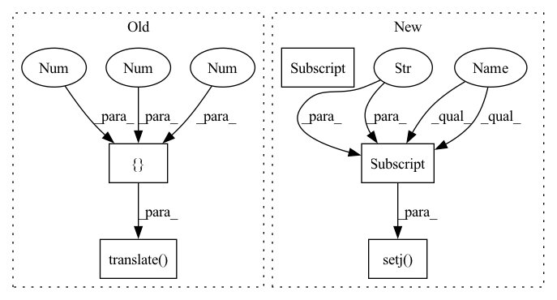

Pattern ID :2765
Before Change
c = mercury.geometry.Coordinate(
*mercury.geometry.pose_from_matrix(T_ee_af_to_world)
)
c.translate( [0 , 0 , -0.1 ])
j = env.ri.solve_ik(c.pose)
if j is None:
logger.warning("j_pre_grasp is not found")After Change
continue
result["js_pre_grasp"] = js
env.ri.setj(result["j_grasp"] )
// solve js_place
env.ri.attachments = attachments
obstacles = [env.plane, env.bin] + env.object_idsIn pattern: SUPERPATTERN
Frequency: 4
Non-data size: 5
Instances Fragment ID: 11116553
Project Name: wkentaro/reorientbot
Commit Name: 0a491494f52743e9d480d59e6c0bc0b34f25beb4
Time: 2021-05-10
Author: www.kentaro.wada@gmail.com
File Name: examples/grasp_with_intent/reorient.py
M Class Name: AnonimousClass
N Class Name: AnonimousClass
M Method Name: plan_reorient(3)
N Method Name: plan_reorient(2)
M Parent Class:
N Parent Class:
M File Name: examples/grasp_with_intent/reorient.py
N File Name: examples/grasp_with_intent/reorient.py
M Start Line: 159
M End Line: 253
N Start Line: 139
N End Line: 269
Before Change
c = mercury.geometry.Coordinate(
*mercury.geometry.pose_from_matrix(T_ee_af_to_world)
)
c.translate( [0 , 0 , -0.1 ])
j = env.ri.solve_ik(c.pose)
if j is None:
logger.warning("j_pre_grasp is not found")After Change
logger.warning("js_pre_grasp is not found")
before_return()
continue
result["js_pre_grasp"] = js
env.ri.setj(result["j_grasp"] )
// solve js_place
env.ri.attachments = attachments
obstacles = [env.plane, env.bin] + env.object_ids Fragment ID: 11116552
Project Name: wkentaro/reorientbot
Commit Name: 0a491494f52743e9d480d59e6c0bc0b34f25beb4
Time: 2021-05-10
Author: www.kentaro.wada@gmail.com
File Name: examples/grasp_with_intent/reorient.py
M Class Name: AnonimousClass
N Class Name: AnonimousClass
M Method Name: plan_reorient(3)
N Method Name: plan_reorient(2)
M Parent Class:
N Parent Class:
M File Name: examples/grasp_with_intent/reorient.py
N File Name: examples/grasp_with_intent/reorient.py
M Start Line: 159
M End Line: 253
N Start Line: 139
N End Line: 269
Before Change
j_init = env.ri.getj()
c = mercury.geometry.Coordinate(*env.PLACE_POSE)
c.translate( [0.05 , 0 , 0.05 ], wrt="world")
LAST_PRE_PLACE_POSE = c.pose
for grasp_pose in target_grasp_poses:
world_saver = pp.WorldSaver()After Change
world_saver.restore()
env.ri.attachments = []
continue
result["js_pre_place"] = js
env.ri.setj(result["j_pre_place"])
pose1 = env.ri.get_pose("tipLink")
env.ri.setj(result["j_last_pre_place"])
pose2 = env.ri.get_pose("tipLink")
env.ri.setj(result["j_pre_place"])
js = []
env.ri.attachments = []
for pose in pp.interpolate_poses_by_num_steps(
pose1, pose2, num_steps=5
):
j = env.ri.solve_ik(pose)
if j is None or not env.ri.validatej(j, obstacles=obstacles):
break
env.ri.setj(j)
js.append(j)
if len(js) != 6:
logger.warning("js_place is not found")
world_saver.restore()
env.ri.attachments = []
continue
env.ri.setj(result["j_place"] )
pose = env.ri.get_pose("tipLink")
j = env.ri.solve_ik(pose)
if j is None:
js.append(result["j_place"]) Fragment ID: 11116555
Project Name: wkentaro/safepicking
Commit Name: eb82d1e6246890ed2b1ac856ba05bb3d2471fbd7
Time: 2021-09-22
Author: www.kentaro.wada@gmail.com
File Name: examples/reorient/_reorient.py
M Class Name: AnonimousClass
N Class Name: AnonimousClass
M Method Name: plan_place(2)
N Method Name: plan_place(2)
M Parent Class:
N Parent Class:
M File Name: examples/reorient/_reorient.py
N File Name: examples/reorient/_reorient.py
M Start Line: 438
M End Line: 616
N Start Line: 457
N End Line: 624